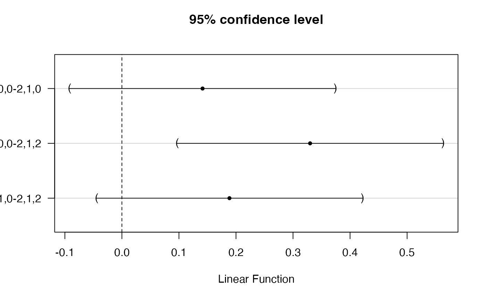

Standard result functions for SO-PLS (sopls).
# S3 method for sopls
predict(
object,
newdata,
ncomp = object$ncomp,
type = c("response", "scores"),
na.action = na.pass,
...
)
# S3 method for sopls
coef(object, ncomp = object$ncomp, intercept = FALSE, ...)
# S3 method for sopls
print(x, ...)
# S3 method for sopls
summary(
object,
what = c("all", "validation", "training"),
digits = 4,
print.gap = 2,
...
)
classify(object, ...)
# S3 method for sopls
classify(object, classes, newdata, ncomp, LQ = "LDA", ...)
# S3 method for sopls
R2(object, estimate, newdata, ncomp = "all", individual = FALSE, ...)
# S3 method for sopls
RMSEP(object, estimate, newdata, ncomp = "all", individual = FALSE, ...)
pcp(object, ...)
# S3 method for sopls
pcp(object, ncomp, ...)
# S3 method for default
pcp(object, X, ...)
cvanova(pred, ...)
# S3 method for default
cvanova(pred, true, absRes = TRUE, ...)
# S3 method for sopls
cvanova(pred, comps, absRes = TRUE, ...)
# S3 method for cvanova
print(x, ...)
# S3 method for cvanova
summary(object, ...)
# S3 method for cvanova
plot(x, ...)A sopls object.
Optional new data with the same types of predictor blocks as the ones used for fitting the object.
An integer vector giving the exact components to apply.
A character for predict indicating if responses or scores should be predicted (default = "response", or "scores"), for summary indicating which type of explained variance to compute (default = "train", alternative = "CV").
Function determining what to do with missing values in newdata.
Additional arguments. Currently not implemented.
A logical indicating if coefficients for the intercept should be included (default = FALSE).
A sopls object.
A character indicating if summary should include all, validation or training.
The number of digits used for printing.
Gap between columns when printing.
A character vector of class labels.
A character indicating if 'max' (maximum score value), 'lda' or 'qda' should be used when classifying.
A character indicating if 'train', 'CV' or 'test' results should be displayed.
A logical indicating if results for individual responses should be displayed.
A list of data blocks.
An object holding the CV-predicted values (sopls, matrix or list of vectors)
A numeric of true response values for CVANOVA.
A logical indicating if absolute (TRUE) or squared (FALSE) residuals should be computed.
An integer vector giving the exact components to apply.
Returns depend on method used, e.g. predict.sopls returns predicted responses
or scores depending on inputs, coef.sopls return regression coefficients, while print and summary methods return the object invisibly.
The parameter ncomp controls
which components to apply/extract, resulting in the sequence of components leading up to the specific choice, i.e.
ncomp = c(2,2,1) results in the sequence 1,0,0; 2,0,0; 2,1,0; 2,2,0; 2,2,1.
Usage of the functions are shown using generics in the examples below.
Prediction, regression coefficients, object printing and summary are available through:
predict.sopls, coef.sopls, print.sopls and summary.sopls.
Explained variances and RMSEP are available through R2.sopls and RMSEP.sopls.
Principal components of predictions are available through pcp.sopls. Finally, there is work in progress on classifcation
support through classify.sopls.
Jørgensen K, Mevik BH, Næs T. Combining designed experiments with several blocks of spectroscopic data. Chemometr Intell Lab Syst. 2007;88(2): 154–166.
Overviews of available methods, multiblock, and methods organised by main structure: basic, unsupervised, asca, supervised and complex.
Common functions for plotting are found in sopls_plots.
data(potato)
mod <- sopls(Sensory[,1] ~ ., data = potato[c(1:3,9)], ncomp = 5, subset = 1:20)
testset <- potato[-(1:20),]; testset$Sensory <- testset$Sensory[,1,drop=FALSE]
predict(mod, testset, ncomp=c(2,1,2))
#> , , 1,0,0
#>
#> Sensory[, 1]
#> [1,] 3.922829
#> [2,] 3.801854
#> [3,] 6.409450
#> [4,] 2.960830
#> [5,] 4.433857
#> [6,] 3.223006
#>
#> , , 2,0,0
#>
#> Sensory[, 1]
#> [1,] 4.062985
#> [2,] 4.238679
#> [3,] 7.178207
#> [4,] 2.477011
#> [5,] 3.319856
#> [6,] 2.904183
#>
#> , , 2,1,0
#>
#> Sensory[, 1]
#> [1,] 4.169790
#> [2,] 4.471989
#> [3,] 7.282654
#> [4,] 2.426714
#> [5,] 3.273465
#> [6,] 2.898753
#>
#> , , 2,1,1
#>
#> Sensory[, 1]
#> [1,] 5.2214087
#> [2,] 5.1427034
#> [3,] 9.7861678
#> [4,] -0.7742392
#> [5,] 0.9645707
#> [6,] 2.2666501
#>
#> , , 2,1,2
#>
#> Sensory[, 1]
#> [1,] 5.4727706
#> [2,] 5.5669734
#> [3,] 11.3237645
#> [4,] -2.3105720
#> [5,] 0.2755925
#> [6,] 2.1649361
#>
dim(coef(mod, ncomp=c(3,0,1))) # <variables x responses x components>
#> [1] 1076 1 4
R2(mod, ncomp = c(4,1,2))
#> 1,0,0 2,0,0 3,0,0 4,0,0 4,1,0 4,1,1 4,1,2
#> 0.7283653 0.8638657 0.8754625 0.8865483 0.9065776 0.9672131 0.9705168
print(mod)
#> Sequential and Orthogonalized Partial Least Squares, fitted with the PKPLS algorithm.
#> Call:
#> sopls(formula = Sensory[, 1] ~ ., ncomp = 5, data = potato[c(1:3, 9)], subset = 1:20)
summary(mod)
#> Data: X dimension: 20 0
#> Y dimension: 20 1
#> Fit method: PKPLS
#> Number of components considered: 15
#> TRAINING: % variance explained
#> 0,0,0 0,0,1 0,0,2 0,0,3 0,0,4 0,0,5 0,1,0 0,1,1 0,1,2
#> X 0 20.86 28.31 36.64 44.50 49.32 43.07 48.93 57.63
#> Sensory[, 1] 0 67.18 76.02 79.52 82.14 86.78 31.94 77.34 78.82
#> 0,1,3 0,1,4 0,1,5 0,2,0 0,2,1 0,2,2 0,2,3 0,2,4 0,2,5
#> X 64.80 72.01 75.43 53.34 58.2 63.49 70.46 77.88 80.61
#> Sensory[, 1] 81.95 85.33 90.05 57.59 79.4 84.80 86.19 87.51 94.30
#> 0,3,0 0,3,1 0,3,2 0,3,3 0,3,4 0,3,5 0,4,0 0,4,1 0,4,2
#> X 64.51 67.17 68.88 75.52 80.49 83.06 67.33 68.65 71.70
#> Sensory[, 1] 64.12 85.01 86.62 87.59 93.18 94.14 74.00 83.04 87.33
#> 0,4,3 0,4,4 0,4,5 0,5,0 0,5,1 0,5,2 0,5,3 0,5,4 0,5,5
#> X 76.96 81.33 84.16 71.36 73.06 76.39 78.64 81.95 86.70
#> Sensory[, 1] 87.88 94.30 95.34 80.83 86.18 89.54 90.73 92.24 95.77
#> 1,0,0 1,0,1 1,0,2 1,0,3 1,0,4 1,0,5 1,1,0 1,1,1 1,1,2
#> X 26.79 31.20 43.68 46.20 52.01 55.18 61.24 66.52 71.52
#> Sensory[, 1] 72.84 91.32 92.82 95.22 95.51 96.93 76.08 88.73 93.14
#> 1,1,3 1,1,4 1,1,5 1,2,0 1,2,1 1,2,2 1,2,3 1,2,4 1,2,5
#> X 74.07 79.80 81.43 67.65 73.86 76.42 78.58 84.35 85.69
#> Sensory[, 1] 95.49 95.82 97.27 79.16 88.85 93.93 95.79 96.00 97.71
#> 1,3,0 1,3,1 1,3,2 1,3,3 1,3,4 1,3,5 1,4,0 1,4,1 1,4,2
#> X 77.02 78.22 79.95 83.57 86.14 88.56 78.39 79.69 80.67
#> Sensory[, 1] 81.81 93.93 94.20 95.89 96.11 97.76 85.47 91.35 94.63
#> 1,4,3 1,4,4 1,4,5 1,5,0 1,5,1 1,5,2 1,5,3 1,5,4 1,5,5
#> X 84.14 86.57 89.08 82.78 84.04 84.95 88.04 89.04 90.79
#> Sensory[, 1] 95.99 96.22 97.90 86.07 91.69 94.63 95.98 96.39 98.57
#> 2,0,0 2,0,1 2,0,2 2,0,3 2,0,4 2,0,5 2,1,0 2,1,1 2,1,2
#> X 34.87 37.53 48.20 50.75 55.97 59.45 68.53 70.72 76.16
#> Sensory[, 1] 86.39 94.20 94.31 95.79 96.04 97.41 87.33 93.13 94.50
#> 2,1,3 2,1,4 2,1,5 2,2,0 2,2,1 2,2,2 2,2,3 2,2,4 2,2,5
#> X 78.45 83.48 85.00 75.89 78.58 80.38 82.27 86.68 88.61
#> Sensory[, 1] 96.01 96.30 97.72 88.70 93.06 95.15 96.23 97.50 98.19
#> 2,3,0 2,3,1 2,3,2 2,3,3 2,3,4 2,3,5 2,4,0 2,4,1 2,4,2
#> X 79.17 80.67 83.25 85.01 87.84 90.11 82.09 82.98 84.07
#> Sensory[, 1] 92.41 93.82 95.29 96.23 96.73 98.47 92.65 94.89 95.63
#> 2,4,3 2,4,4 2,4,5 2,5,0 2,5,1 2,5,2 2,5,3 2,5,4 2,5,5
#> X 85.28 89.93 90.89 83.91 84.81 86.30 88.20 90.32 92.83
#> Sensory[, 1] 96.54 97.24 99.08 92.87 95.07 95.84 96.82 97.06 99.46
#> 3,0,0 3,0,1 3,0,2 3,0,3 3,0,4 3,0,5 3,1,0 3,1,1 3,1,2
#> X 59.03 60.65 67.95 70.92 75.78 78.19 69.06 71.96 73.84
#> Sensory[, 1] 87.55 94.19 94.84 96.29 96.67 98.11 88.70 93.08 95.30
#> 3,1,3 3,1,4 3,1,5 3,2,0 3,2,1 3,2,2 3,2,3 3,2,4 3,2,5
#> X 76.78 81.94 85.02 78.92 82.53 84.55 87.83 89.64 92.04
#> Sensory[, 1] 96.44 96.79 98.38 90.25 93.89 95.89 96.50 97.03 98.11
#> 3,3,0 3,3,1 3,3,2 3,3,3 3,3,4 3,3,5 3,4,0 3,4,1 3,4,2
#> X 85.24 86.31 88.93 91.19 92.91 94.53 87.57 88.49 89.60
#> Sensory[, 1] 92.87 94.71 95.90 96.52 97.17 98.90 93.39 95.41 96.33
#> 3,4,3 3,4,4 3,4,5 3,5,0 3,5,1 3,5,2 3,5,3 3,5,4 3,5,5
#> X 92.66 93.73 95.33 88.38 89.34 90.28 93.27 94.34 96.69
#> Sensory[, 1] 96.89 97.69 99.48 93.82 95.72 96.59 97.23 97.75 99.49
#> 4,0,0 4,0,1 4,0,2 4,0,3 4,0,4 4,0,5 4,1,0 4,1,1 4,1,2
#> X 70.41 72.12 74.08 79.57 81.18 83.20 77.16 78.39 79.70
#> Sensory[, 1] 88.65 95.40 96.30 96.76 97.29 97.98 90.66 96.72 97.05
#> 4,1,3 4,1,4 4,1,5 4,2,0 4,2,1 4,2,2 4,2,3 4,2,4 4,2,5
#> X 84.71 85.89 87.74 89.89 91.13 92.42 94.25 94.80 96.04
#> Sensory[, 1] 97.29 97.92 98.72 91.21 97.00 97.43 97.85 98.52 99.11
#> 4,3,0 4,3,1 4,3,2 4,3,3 4,3,4 4,3,5 4,4,0 4,4,1 4,4,2
#> X 91.46 92.59 92.95 94.13 94.93 96.32 92.88 93.93 94.29
#> Sensory[, 1] 94.59 95.99 97.39 97.76 99.11 99.26 95.17 96.24 97.51
#> 4,4,3 4,4,4 4,4,5 4,5,0 4,5,1 4,5,2 4,5,3 4,5,4 4,5,5
#> X 95.36 95.70 97.96 93.79 94.63 94.91 95.99 96.25 98.56
#> Sensory[, 1] 97.87 98.61 99.19 95.36 96.95 97.82 98.18 99.02 99.50
#> 5,0,0 5,0,1 5,0,2 5,0,3 5,0,4 5,0,5 5,1,0 5,1,1 5,1,2
#> X 77.24 78.66 81.59 89.61 91.01 92.56 86.22 87.57 90.46
#> Sensory[, 1] 90.58 94.51 96.27 96.80 97.36 98.45 92.18 95.85 96.90
#> 5,1,3 5,1,4 5,1,5 5,2,0 5,2,1 5,2,2 5,2,3 5,2,4 5,2,5
#> X 91.65 92.24 95.65 92.51 93.92 95.20 95.54 95.83 96.87
#> Sensory[, 1] 97.71 98.50 98.74 92.88 97.40 97.44 98.25 98.99 99.32
#> 5,3,0 5,3,1 5,3,2 5,3,3 5,3,4 5,3,5 5,4,0 5,4,1 5,4,2
#> X 93.67 95.09 95.47 96.08 96.43 97.46 95.04 96.33 96.72
#> Sensory[, 1] 95.76 96.58 97.44 98.65 99.22 99.46 96.35 96.90 97.52
#> 5,4,3 5,4,4 5,4,5 5,5,0 5,5,1 5,5,2 5,5,3 5,5,4 5,5,5
#> X 97.24 97.57 97.76 96.06 97.06 97.55 98.14 98.37 98.51
#> Sensory[, 1] 98.70 99.13 99.62 96.58 97.22 97.75 98.73 99.30 99.77
# PCP from sopls object
modMulti <- sopls(Sensory ~ ., data = potato[c(1:3,9)], ncomp = 5, validation = "CV", segment = 5)
(PCP <- pcp(modMulti, c(2,1,2)))
#> Principal Components of Predictions
#>
#> Call:
#> pcp.sopls(object = modMulti, ncomp = c(2, 1, 2))
scoreplot(PCP)
# PCP from matrices
preds <- modMulti$validation$Ypred[,,"2,1,2"]
PCP_default <- pcp(preds, potato[1:3])
# CVANOVA
modCV <- sopls(Sensory[,1] ~ ., data = potato[c(1:3,9)], ncomp = 5, validation = "CV", segment = 5)
summary(cva <- cvanova(modCV, "2,1,2"))
#> Analysis of Variance Table
#>
#> Response: Residual
#> Df Sum Sq Mean Sq F value Pr(>F)
#> Model 2 0.650 0.32514 4.3735 0.01777 *
#> Object 25 35.618 1.42473 19.1642 < 2e-16 ***
#> Residuals 50 3.717 0.07434
#> ---
#> Signif. codes: 0 ‘***’ 0.001 ‘**’ 0.01 ‘*’ 0.05 ‘.’ 0.1 ‘ ’ 1
#> Tukey's HSD
#> Alpha: 0.05
#>
#> Mean G1 G2
#> 2,0,0 1.0426526 B
#> 2,1,0 0.9004616 A B
#> 2,1,2 0.8220494 A
plot(cva)
